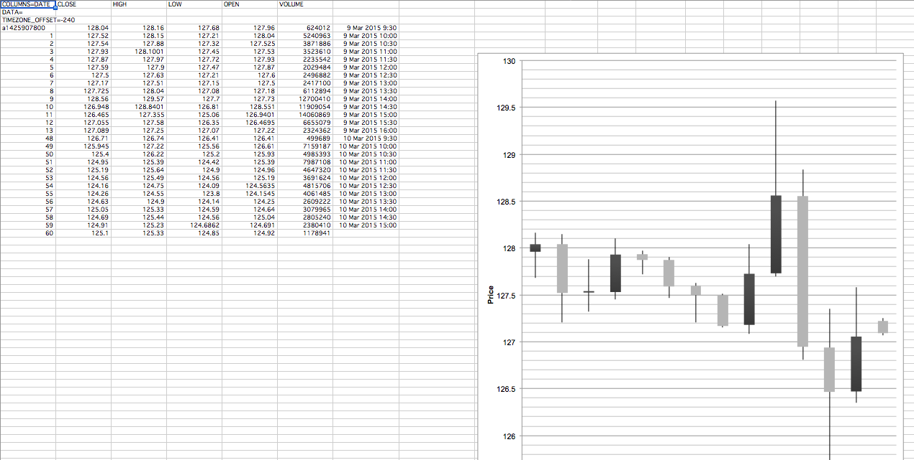

Problem
Surveyor is a tool that allows analysts to view market data to the microsecond. Translating this immense amount of data to a mobile format was a challenge.
Approach
Understand how the mobile context changes the use case of this tool. Focus on a clear UI and interaction patterns to allow users to find the data they need.
Outcome
Contributed to the design of the entire Surveyor app, from visual design to interaction patterns.
Understanding the Surveyor Experience
Getting familiar with a new industry.

In order to contribute meaningfully to this project, I first had to gain a basic understand of high frequency trading and how the Surveyor tool visualized the market. With little knowledge of finance and trading myself, this project was an opportunity to dive into a new industry, as well as collaborate closely with the experts at Trillium, who had the knowledge of the market and industry standards.
A Specialized Audience
Trillium's charting products are typically meant for high frequency traders, a group of users with different needs from the general public. While apps require a degree of simplification to remain usable on small screens, these traders and analysts derive the most value from being able to "dig around in the sandbox" to find small patterns in the market.

What's the Value?
Trillium's app needed a clear value proposition in order to appeal to its specific audience. While many trading apps exist, the Surveyor tool has a focus on identify meaningful market events (such as reports of mergers) and show the reaction of the market in detail up to the microsecond. Understanding the value of microsecond data and viewing market events helped to focus the app and prevent feature bloat.
Exploring Data Visualization
Finding and charting real data.
With the focus on accuracy and data exploration, finding realistic data for our mockups was crucial. Making mockups that looked nice with unrealistic data would not have flown. I found myself in every designer's least favorite program, excel, making prototype charts with data found on the web. While not pretty, this charts helped give the team a general idea of what the visualizations would actually look like.
Interaction Patterns
Investigating how to navigate complex charts on an iPhone